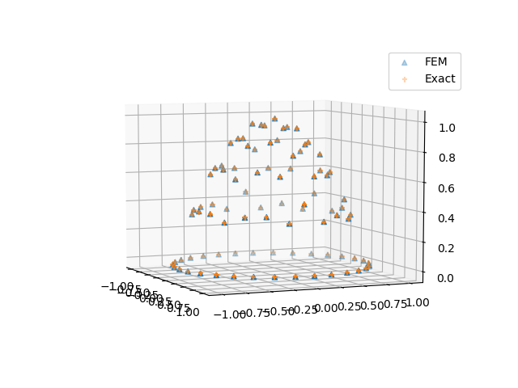

While Loops
Motivation
In engineering, we usually need to do for loops, e.g., time stepping, finite element matrix assembling, etc. In pseudocode, we have
for i = 1:1000000
global x
x = do_some_simulation(x)
endTo do automatic differentiation in ADCME, direct implemnetation in the above way incurs creation of 1000000 subgraphs, which requires large memories and long dependency parsing time.
TensorFlow provides us a clever way to do loops, where only one graph is created for the whole loops. The basic idea is to create a while_loop graph based on five primitives, and the corresponding graph for backpropagation is constructed thereafter.
A Basic Example
As a simple example, we consider assemble the external load vector for linear finite elements in 1D. Assume that the load distribution is $f(x)=1-x^2$, $x\in[0,1]$. The goal is to compute a vector $\mathbf{v}$ with $v_i=\int_{0}^1 f(x)\phi_i(x)dx$, where $\phi_i(x)$ is the $i$-th linear element.
The pseudocode for this problem is shown in the following
F = zeros(ne+1) // ne is the total number of elements
for e = 1:ne
add load contribution to F[e] and F[e+1]
end
However, if ne is very large, writing explicit loops is unwise since it will create ne subgraphs. while_loop can be very helpful in this case (the script can also be found in https://github.com/kailaix/ADCME.jl/tree/master/examples/whileloop/whileloop_simple.jl)
using ADCME
ne = 100
h = 1/ne
f = x->1-x^2
function cond0(i, F_arr)
i<=ne+1
end
function body(i, F_arr)
fmid = f(cast(i-2, Float64)*h+h/2)
F = vector([i-1;i], [fmid*h/2;fmid*h/2], ne+1)
F_arr = write(F_arr, i, F)
i+1, F_arr
end
F_arr = TensorArray(ne+1)
F_arr = write(F_arr, 1, constant(zeros(ne+1))) # inform `F_arr` of the data type by writing at index 1
i = constant(2, dtype=Int32)
_, out = while_loop(cond0, body, [i,F_arr]; parallel_iterations=10)
F = sum(stack(out), dims=1)
sess = Session(); init(sess)
F0 = run(sess, F)Finite Element Analysis
In this section, we demonstrate how to assemble a finite element matrix based on while_loop for a 2D Poisson problem. We consider the following problem
Here $\Omega$ is the unit disk. We consider a simple case, where
Then the exact solution will be
The weak formulation is
We split $\Omega$ into triangles $\mathcal{T}$ and use piecewise linear basis functions. Typically, we would iterate over all elements and compute the local stiffness matrix for each element. However, this could result in a large loop if we use a fine mesh. Instead, we can use while_loop to complete the task. In ADCME, the syntax for while_loop is
while_loop(condition, body, loop_vars)here condition and body take loop_vars as inputs. The former outputs a bool tensor indicating whether to terminate the loop while the latter outputs the updated loop_vars. TensorArry is used to store variables that change during the loops. The codes for assembling FEM is
function assemble_FEM(Ds, Fs, nodes, elem)
NT = size(elem,1)
cond0 = (i,tai,taj,tav, tak, taf) -> i<=NT
elem = constant(elem)
nodes = constant(nodes)
function body(i, tai, taj, tav, tak, taf)
el = elem[i]
x1, y1 = nodes[el[1]][1], nodes[el[1]][2]
x2, y2 = nodes[el[2]][1], nodes[el[2]][2]
x3, y3 = nodes[el[3]][1], nodes[el[3]][2]
T = abs(0.5*x1*y2 - 0.5*x1*y3 - 0.5*x2*y1 + 0.5*x2*y3 + 0.5*x3*y1 - 0.5*x3*y2)
D = Ds[i]; F = Fs[i]*T/3
v = T*stack([D*((-x2 + x3)^2/(x1*y2 - x1*y3 - x2*y1 + x2*y3 + x3*y1 - x3*y2)^2 + (y2 - y3)^2/(x1*y2 - x1*y3 - x2*y1 + x2*y3 + x3*y1 - x3*y2)^2),D*((x1 - x3)*(-x2 + x3)/(x1*y2 - x1*y3 - x2*y1 + x2*y3 + x3*y1 - x3*y2)^2 + (-y1 + y3)*(y2 - y3)/(x1*y2 - x1*y3 - x2*y1 + x2*y3 + x3*y1 - x3*y2)^2),D*((-x1 + x2)*(-x2 + x3)/(x1*y2 - x1*y3 - x2*y1 + x2*y3 + x3*y1 - x3*y2)^2 + (y1 - y2)*(y2 - y3)/(x1*y2 - x1*y3 - x2*y1 + x2*y3 + x3*y1 - x3*y2)^2),D*((x1 - x3)*(-x2 + x3)/(x1*y2 - x1*y3 - x2*y1 + x2*y3 + x3*y1 - x3*y2)^2 + (-y1 + y3)*(y2 - y3)/(x1*y2 - x1*y3 - x2*y1 + x2*y3 + x3*y1 - x3*y2)^2),D*((x1 - x3)^2/(x1*y2 - x1*y3 - x2*y1 + x2*y3 + x3*y1 - x3*y2)^2 + (-y1 + y3)^2/(x1*y2 - x1*y3 - x2*y1 + x2*y3 + x3*y1 - x3*y2)^2),D*((-x1 + x2)*(x1 - x3)/(x1*y2 - x1*y3 - x2*y1 + x2*y3 + x3*y1 - x3*y2)^2 + (-y1 + y3)*(y1 - y2)/(x1*y2 - x1*y3 - x2*y1 + x2*y3 + x3*y1 - x3*y2)^2),D*((-x1 + x2)*(-x2 + x3)/(x1*y2 - x1*y3 - x2*y1 + x2*y3 + x3*y1 - x3*y2)^2 + (y1 - y2)*(y2 - y3)/(x1*y2 - x1*y3 - x2*y1 + x2*y3 + x3*y1 - x3*y2)^2),D*((-x1 + x2)*(x1 - x3)/(x1*y2 - x1*y3 - x2*y1 + x2*y3 + x3*y1 - x3*y2)^2 + (-y1 + y3)*(y1 - y2)/(x1*y2 - x1*y3 - x2*y1 + x2*y3 + x3*y1 - x3*y2)^2),D*((-x1 + x2)^2/(x1*y2 - x1*y3 - x2*y1 + x2*y3 + x3*y1 - x3*y2)^2 + (y1 - y2)^2/(x1*y2 - x1*y3 - x2*y1 + x2*y3 + x3*y1 - x3*y2)^2)])
tav = write(tav, i, v)
ii = vec([elem[i] elem[i] elem[i]]')
jj = [elem[i]; elem[i]; elem[i]]
tai = write(tai, i, ii)
taj = write(taj, i, jj)
tak = write(tak, i, elem[i])
taf = write(taf, i, stack([F,F,F]))
return i+1, tai, taj, tav, tak, taf
end
tai = TensorArray(NT, dtype=Int32)
taj = TensorArray(NT, dtype=Int32)
tak = TensorArray(NT, dtype=Int32)
tav = TensorArray(NT)
taf = TensorArray(NT)
i = constant(1, dtype=Int32)
i, tai, taj, tav, tak, taf = body(i, tai, taj, tav, tak, taf)
_, tai, taj, tav, tak, taf = while_loop(cond0, body, [i, tai, taj, tav, tak, taf]; parallel_iterations=10)
vec(stack(tai)[1:NT]'), vec(stack(taj)[1:NT]'), vec(stack(tav)[1:NT]'),
vec(stack(tak)[1:NT]'), vec(stack(taf)[1:NT]')
endExplanation
We now explain the codes.
We assume that nodes is a $n_v\times 2$ tensor holding all $n_v$ coordinates of the nodes, elem is a $n_e\times 3$ tensor holding all $n_e$ triangle vertex index triples. We create five TensorArray to hold the row indices, column indices and values for the stiffness matrix, and row indices and values for the right hand side (Here NT denotes $n_e$):
tai = TensorArray(NT, dtype=Int32)
taj = TensorArray(NT, dtype=Int32)
tak = TensorArray(NT, dtype=Int32)
tav = TensorArray(NT)
taf = TensorArray(NT)Within each loop (body), we extract the coordinates of each vertex coordinate
el = elem[i]
x1, y1 = nodes[el[1]][1], nodes[el[1]][2]
x2, y2 = nodes[el[2]][1], nodes[el[2]][2]
x3, y3 = nodes[el[3]][1], nodes[el[3]][2]and compute the area of ith triangle
T = abs(0.5*x1*y2 - 0.5*x1*y3 - 0.5*x2*y1 + 0.5*x2*y3 + 0.5*x3*y1 - 0.5*x3*y2)The local stiffness matrix is computed and vectorized (v). It is computed symbolically. To store the computed value into TensorArray, we call the write API (there is also read API, which reads a value from TensorArray)
tav = write(tav, i, v)Note we have called
i, tai, taj, tav, tak, taf = body(i, tai, taj, tav, tak, taf)before we call while_loop. This is because we need to initialize the TensorArrays (i.e., telling them the size and type of elements in the arrays). We must guarantee that the sizes and types of the elements in the arrays are consistent in while_loop.
Finally, we stack the TensorArray into a tensor and vectorized it according to the row major. This serves as the output of assemble_FEM. The complete script for solving this problem is here and the following plot shows the numerical result and corresponding reference solution.

Gradients through while_loop
To inspect the gradients through the loops, we can run
println(run(sess, gradients(sum(u), Ds))) # a sparse tensorThis outputs a sparse tensor instead of a full tensor. To obtain the full tensor, we could call tf.convert_to_tensor
println(run(sess, tf.convert_to_tensor(gradients(sum(u), Ds)))) # full tensor